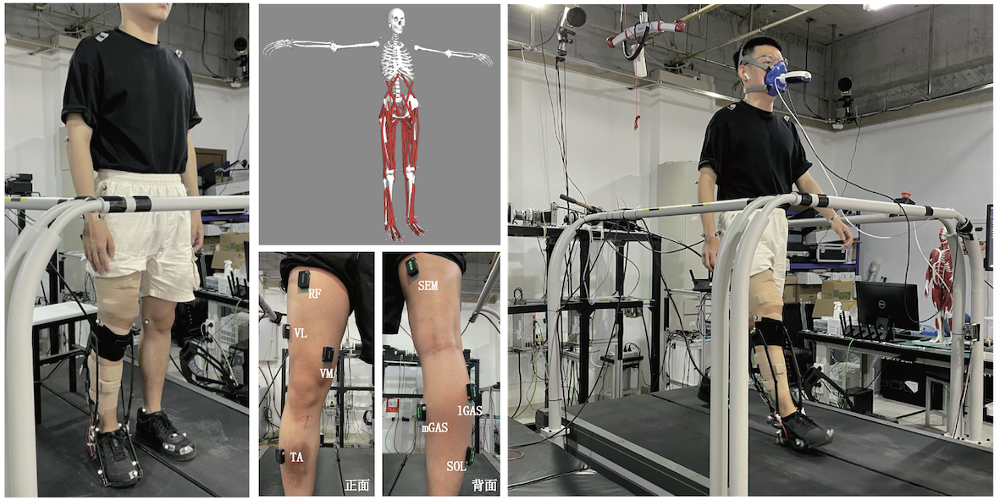
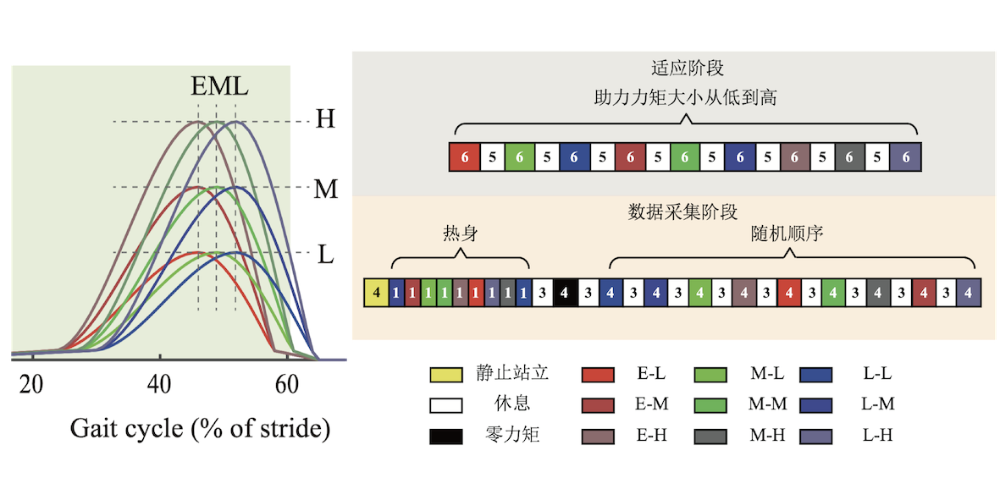

外骨骼辅助对人体生理与生物力学影响
-

-

-

外骨骼机器人可用于人体运动康复、辅助以及动力提升，是人工智能及机器人技术在对抗社会老龄化、提高人民生活质量、提升国防实力等领域的新兴重要应用。人体下肢运动，如走、跑、跳等，由于涉及频繁的能量交换及补充，耗能巨大，是外骨骼机器人应用的应用的重要领域。然而，从硬、软件上实现外骨骼对人体的有效辅助无法一蹴而就，虽然与传统独立机器人同属动力机械装置，但类似外骨骼的人机物理交互系统在应用场景下与传统机器人有本质区别。在此类系统中，人体不只是用户，更是系统的一部分，而且是关键的最终执行器。而包括控制、驱动、执行子系统在内的外骨骼，整体充当了人机交互系统的驱动器。外骨骼输出的路径或行为，其实是对与之交互的人体的外力输入，而人体的反应才是包含外骨骼机器人和人体的总系统的最终输出。忽视人体本身的运动特性，而独立进行外骨骼机器人结构及控制器的设计，必然是无源之水、无本之木。
外骨骼与人体交互作用多维度、多层次的，机械结构会被动影响人体的自然运动、控制器的跟踪性能会影响人机交互的柔顺性、辅助的模式参数会影响辅助舒适度与有效性。为深入理解人体与外骨骼的交互特性，实验室针对多种外骨骼系统、多种运动模式，探究外骨骼的辅助特性、结构参数、控制性能对人体运动的运动学、动力学、生理学的影响，分析外骨骼辅助下人体的关节力矩、肌肉收缩、代谢消耗、能量流动、平衡特征的变化，为外骨骼系统的机械结构、控制系统、辅助模式的设计提供指导。